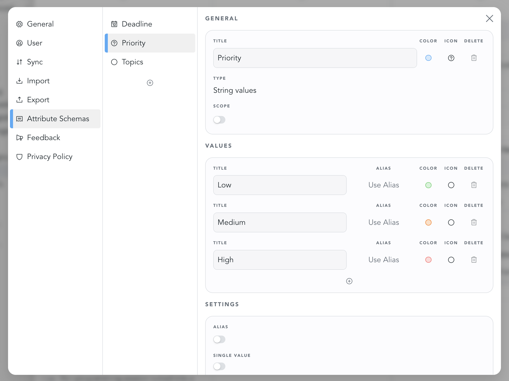

Many note-taking apps offer tags (for example, #some-tag) as a way to organize
content. Some also provide properties — a separate concept that allows you to
attach named, typed values to items. For example, a task might have a property
called “priority” with predefined values such as P1-P3.
Snippets combines these two ideas into a single concept called attributes. Like properties, attributes can be attached to a document. Like tags, they can also be inserted directly inside rich-text content.
Attributes can serve multiple roles: they can act as simple tags, can be used in habit- or streaktracking scenarios, appear as columns in tables and as fields on tasks.
Attribute schemas
To create an attribute, you always have to define an attribute schema first.
An attribute schema defines what kind of information an attribute can hold, how it is presented, and how it behaves. This includes the attribute's data type, its icon and color, and depending on its datatype, which values it can hold.
Here's an example of what the configuration page of a priority attribute schema could look like:

It can then be used, for example, in a table:
Types of attributes
Snippets supports several types of attributes.
Date
Date attributes hold a single date value. They can be edited through a date picker. In task management, they can be used to represent due dates and start dates.
String Values
String attributes cover a wide range of uses. In the simplest case, they behave much like tags: they consist of a title and can optionally include an icon or color.
They can also define a set of selectable values, each with its own label, color, and icon. Depending on the use case, they can be configured to allow a single value or multiple values — making them well suited for things like priorities, statuses, or categories.
Rich Text
Rich text attributes store formatted text. They are mainly used in tables, where they can serve as a text column. They can also be inserted inline within documents to hold supplementary content, similar to footnotes.
Number
Number attributes store numeric values.
Task
Task attributes are a special type of attribute used internally by the app. You can't directly create them yourself: instead, they are used under the hood to power task management capabilities. Task attributes hold information about the done state of the task to which they are attatched.
Creating attribute schemas
Attribute schemas can be created in App Settings under the menu point "Attribute Schemas".
Deleting attribute schemas
Attribute schemas can only be deleted if they are unused. As soon as you've created an attribute of the respective schema, the schema will not be deletable. This is because every attribute internally references the schema. To delete the schema, first delete all occurences of the related attribute.
Using attributes in rich text documents
Adding attributes
Use the command pallette "/" to bring up a list of available attributes. It will give suggestions based on your query. Hit enter to select one.
Updating attributes
Select the attribute. Its value can now be edited via the respective value picker.
Deleting attributes
Simply select the attribute or place the cursor in front of it and hit backspace.
Using attributes in tables
Attributes can be used as table columns: